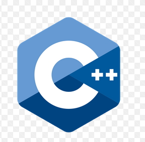

C++ é uma linguagem de programação de propósito geral que foi desenvolvida como uma extensão da linguagem C. Por ser uma linguagem orientada a objetos, ela combina recursos de instruções para informar ao computador o que fazer, tornando-a uma das linguagens mais versáteis e poderosas disponíveis atualmente. Sua sintaxe é
O C++ tem suas raízes na linguagem C, que foi desenvolvida no início dos anos 1970 por Dennis Ritchie. Bjarne Stroustrup, um estudante de doutorado da época, viu a oportunidade de melhorar a linguagem C ao adicionar recursos de programação orientada a objetos. Assim, em 1983, Stroustrup lançou a primeira versão do C++.
Logo do C++:
Trecho de código em C++:
double f(double t)
{
return sqrt(abs(t)) + 5 * pow(t, 3);
}
int main()
{
double a[11];
for (auto& t : a)
std::cin >> t;
auto iter = a | std::views::enumerate | std::views::reverse;
for (const auto [i, t] : iter) {
if (auto y = f(t); y > 400)
std::cout << std::format("{} TOO LARGE\n", i);
else
std::cout << std::format("{} {}\n", i, y);
}
}
O código abaixo usa as tags sub,small e sup:
123456789